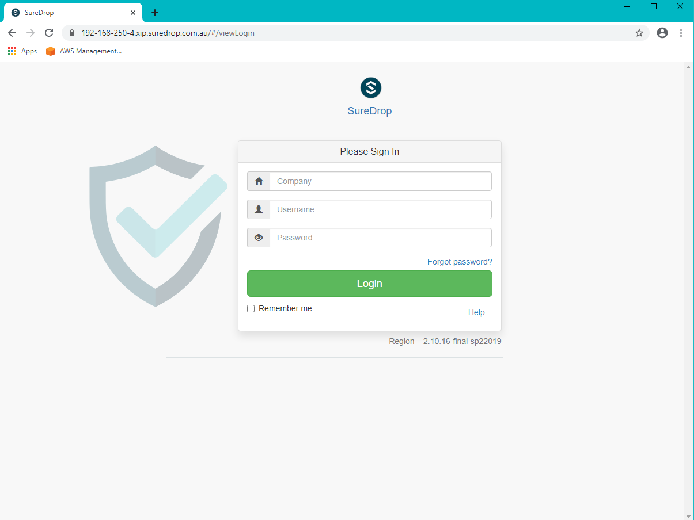
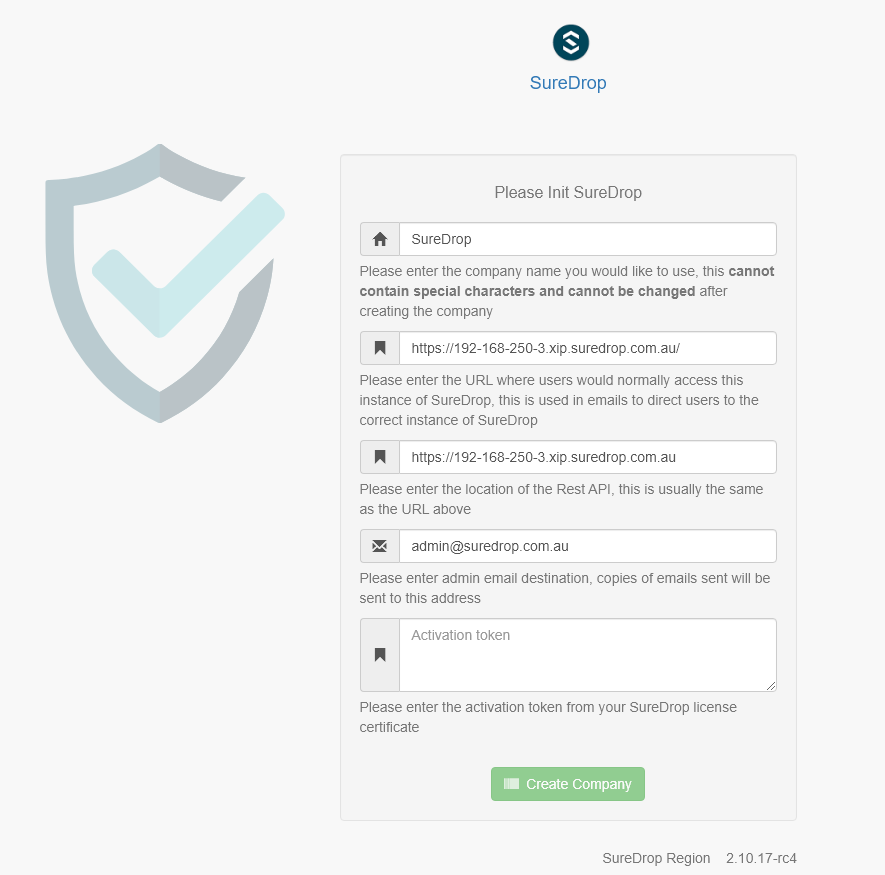

New Install - Windows 2019
Important
Please refer to the What version to install guide prior to following the instructions below
Before starting this install you will need to contact support and obtain the following:
Username
Password
Activation Key
The Version of SureDrop to Install
Pre Requisites
Install Windows Server 2019 with at least 12GB RAM and 100GB hard disk space.
Set a static IP address
sconfig option 8- Run MS update and install all recommended updates.(It’s important that this step is done *before* step 4)
sconfig option 6 Install windows containers using an admin powershell with the following commands:
Install-WindowsFeature -Name Containers Restart-Computer -Force
Install docker using an admin powershell with the following commands:
Install-Module -Name DockerMsftProvider -Repository PSGallery -Force Install-Package -Name docker -ProviderName DockerMsftProvider -Force Restart-Computer -Force
Note
You may be asked
NuGet provider is required to continue, if this is the case select[Y] YesEnable FIPS 140-2 Compliance
[System.Environment]::SetEnvironmentVariable("DOCKER_FIPS", "1", "Machine")
Installation of SureDrop
Run the following command:
wget "https://s3-ap-southeast-2.amazonaws.com/suredrop-downloads/compose/create-suredrop.bat" -outfile "create-suredrop.bat";./create-suredrop.bat
Note
This bat file will ask a series of questions and create the SureDrop instance. As part of this install an answers.bat file will be created in the same directory. Do not delete this file as it will be required to run an update if required, however please ensure the security on this file is locked down as this file contains secret information such as passwords in plain text. Ensure that there is one and only one
admin powershellwindow attempting the installation, multiple windows pointing to the install directory or storage locations will fail the installation. The install script is designed with defaults. Every feature is not relevant / required by all clients, so when not sure about any step it is wise to choose the default values.You will be prompted with the following introduction
Enter the version given to you in your license document.
1) SureDrop Version Enter the version of SureDrop you would like to create:
Make sure you enter 2019 when asked for the Compose Version to use.
If Senetas Support has given you a Compose Version please enter it here (Default [2016]):2019
For the database configuration choose whether to connect to the supplied internal database or to an existing external database.
SureDrop can connect to an external database or use the internally supplied SQL Server Express instance which is configured to run inside a container.
The internally supplied version is suitable for Proof of Concepts (POC)’s and trials.
Note
For all production installs of SureDrop we strongly recommend that an externally configured version of SQL Server is used that has been configured with the appropriate backups and the appropriate level of clustering and failover protection.
2) Database configuration Connect to an existing database [y/N]:n
Create a database password.
Note
There are restrictions on the database password which must be met which are shown here.
Database passwords MUST meet the following guidelines - 1. Must contain at least 8 characters. 2. Must contain at least 1 character from each of the following four categories: a. Latin uppercase letters (A through Z) b. Latin lowercase letters (a through z) c. Base 10 digits (0 through 9) d. Non-alphanumeric characters such as: exclamation point (!), dollar sign ($), number sign (#), or percent (%). 3. MUST NOT contain the following Characters: Semi-colon (;), at (@), ampersand or brackets Enter a database password (Default [SureDrop123!@]):
Choose the storage configuration. This is where the blocks that make up the content of the files are stored.
Currently SureDrop supports 3 options.
- Windows Shares or SMB shares.
These are standard windows shares and may be on the same server or on a different server. You will need to supply the share URI and the username & password of the share if you select this option.
- Amazon Buckets.
You can choose to store the blocks inside an Amazon S3 bucket. You will need to supply the bucket uri, the AWS access key and the AWS Secret Access key.
- Local Containers.
You can choose to store the blocks locally in the supplied docker containers. You should only choose this option for POC’s and trials, however it is the default option because it requires no further information and is easiest to configure.
3) Storage Server configuration Use (W)indows Shares, (A)mazon S3 Buckets or (L)ocal Containers for storage [w/a/L]:l
Enter the admin email address.
This is the email address of the admin user. Typically this would be the email address of the person responsible for administering SureDrop.
4) Mail Server Configuration Admin Email Address: rob.linton@senetas.com
Do you wish to use the default AWS mail server.
By default SureDrop is configured to use Amazon AWS to relay mail. This is for convenience so you don’t have to configure a SMTP mail server.
The default mail server does not keep copies of any mail sent and is not readable by Senetas staff.
If you select no to this question you will be required to enter the SMTP settings and credentials for your SMTP server before proceeding.
Hint
If you want to use a different FROM email address other than:
for emails sent to users you will need to select the SMTP option.
Do you wish to use the default Amazon AWS Mail Server? [Y/n]:y
This will respond with the following:
Using default email from address [noreply@suredrop.com.au] Using admin email address [rob.linton@senetas.com]
Enter the docker credentials that were provided on the SureDrop license certificate.
These will be persisted and used for future upgrades and updates.
5) Docker Credentials Enter Docker username that was provided by support:sentraining Enter Docker password that was provided by support: Testing credentials... WARNING! Using --password via the CLI is insecure. Use --password-stdin. WARNING! Your password will be stored unencrypted in C:\Users\Administrator\.docker\config.json. Configure a credential helper to remove this warning. See https://docs.docker.com/engine/reference/commandline/login/#credentials-store Login Succeeded
Hint
If you wish to use a credential store for Docker, please refer to the following documentation:
https://docs.docker.com/engine/reference/commandline/login/#credentials-store
If you want to configure a custom server certificate for HTTPS then you can do it here.
By default an *.xip.suredrop.com.au certificate is installed. For POC’s and trials this is fine. You may wish to use your own certificate for production installs.
6) Customer PKI Do you want to use a custom HTTPS server certificate for TLS [N/y]:n
You may want to configure a Syslog or Splunk server for logs.
By default SureDrop writes logs to an internal location within the container stack. You can retrieve these logs by running create-suredrop.bat again and selecting the diagnostics option.
7) Customer Logging and Audit Do you want to configure a Syslog server for error and Audit logs [N/y]:n Do you want to configure a Splunk server for error and Audit logs [N/y]:n
You will be presented with a summary of your answers at this point and asked if you would like to continue.
answers.bat file, contents are: ------------------------------------------------------------------ set tag=2.10.0-latest set compose_version=2019 set external_database=N set sa_password=SureDrop123!@ set ConnectionString=Data Source=database-core;Initial Catalog=Core;User Id=sa;Password=SureDrop123!@ set storage_primary_base=c:\shared set storage_primary_username=null set storage_primary_password="null" set storage_backup_base=c:\shared set storage_backup_username=null set storage_backup_password="null" set storage_primary_type=storage-server set storage_backup_type=storage-server set admin_email=rob.linton@senetas.com set emailFrom=noreply@suredrop.com.au set admin_email=rob.linton@senetas.com set docker_username=sentraining set docker_password= ------------------------------------------------------------------ The initial creation of the SureDrop Docker Stack can be time consuming and is broken into 4 stages... 1] Download of the compose scripts 2] Docker pull [this is the longest stage and can take up to an hour on slower connections] 3] Docker stack deploy [takes about 6 minutes] 4] Application of custom PKI [if applicable] If you don't proceed at the next step you will have the option to save your answers and run these steps at a later time. Proceed and create the SureDrop instance on this machine [Y/n]:
Note
At this point, if you answered Y, the installation will proceed.
Depending on your network bandwidth, this may take up to an hour.
Browse to the following url to complete the installation after the countdown has completed:
https://XXX-XXX-XXX-XXX.xip.suredrop.com.au
For example if the IP address of this host is
192.168.250.3, then use the following:https://192-168-250-3.xip.suredrop.com.au
Warning
Please wait until the CPU and disk usage drops to normalcy.
If everything is successful then the previous step should have opened the login page in your browser with 3 empty fields, company name, user name, and password.
Enter SureDrop in the first input box (for Company Name) and press tab or click on the next input box.
Note
The initial company name is SureDrop
This will take you to the create company page which allows the user to configure certain critical parameters of the system. The Create Company button is intentionally disabled at this stage.
Hint
You may need to wait a few seconds for the create company page to appear
Once you’ve filled the Activation Token from your SureDrop license certificate in the last input box of this page, then the Create Company button will be enabled and you should click on it. Once the company is created, SureDrop will automatically redirect you to the login page to create your administrator account password and then login to the system.

SureDrop should now be operational on your own compute infrastructure.
For any questions or if you have any issues following this document, please email admin@suredrop.com.au.
Large File Support
This only applies to Download as Zip, uploading and downloading of individual files of any size is already supported by the default configuration of SureDrop
If you intend on downloading a large number of files using the Download as Zip option the following will need to be taken into consideration.
The disk space on the docker host must be large enough to cater for 3x the size of the zip file. For example, to download a zip file of 1GB, there must be at least 3GB of available disk space on the application server.
If the zip file will be greater than 10GB, then large volume support will need to be enabled within the docker sub-system.
To enable large volume support create a file called
update_docker_reg.regand copy and paste the following into it:Windows Registry Editor Version 5.00 [HKEY_LOCAL_MACHINE\SYSTEM\ControlSet001\Services\Docker] "Type"=dword:00000010 "Start"=dword:00000002 "ErrorControl"=dword:00000001 "ImagePath"=hex(2):22,00,43,00,3a,00,5c,00,50,00,72,00,6f,00,67,00,72,00,61,00,\ 6d,00,20,00,46,00,69,00,6c,00,65,00,73,00,5c,00,44,00,6f,00,63,00,6b,00,65,\ 00,72,00,5c,00,64,00,6f,00,63,00,6b,00,65,00,72,00,64,00,2e,00,65,00,78,00,\ 65,00,22,00,20,00,2d,00,2d,00,72,00,75,00,6e,00,2d,00,73,00,65,00,72,00,76,\ 00,69,00,63,00,65,00,20,00,2d,00,2d,00,73,00,74,00,6f,00,72,00,61,00,67,00,\ 65,00,2d,00,6f,00,70,00,74,00,20,00,73,00,69,00,7a,00,65,00,3d,00,31,00,36,\ 00,30,00,30,00,30,00,47,00,00,00 "ObjectName"="LocalSystem"
Then double click on the file to edit the registry on the windows host.
Click on Yes in the following prompt.
Click on OK in the following dialog.
Restart the docker host
Upgrading or diagnosing a SureDrop instance
Log onto the Windows Server running the SureDrop Docker Containers
Run an admin powershell and CD to the location where you placed the compose files and re-run the
create-suredrop.batfile./create-suredrop.bat
****************************** SureDrop Configuration ****************************** 1) Upgrade Version 2) Upgrade PKI 3) Upgrade Logging and Audit 4) Diagnose 5) Health check 6) Add a Custom Root CA 7) Restart Container Stack 8) Start Container Stack 9) Stop Container Stack 10) Schedule Automatic Updates 11) Exit Enter number to select an option:
Choose option 1 for upgrading SureDrop to a version of your choice.
Choose option 4 for running diagnostics on SureDrop. See Diagnostics for details.
Choose option 5 for running a health check on SureDrop. See Health check for details.
Migrating the Database
Most larger installs will want to migrate the client database from the
SQL Server Express version running in the database-client docker
container on the host.
The port 14331 has been left open for this purpose. Use SQL Server
Manager Studio to connect to the client instance and migrate the
SureDrop client database to your own instance.
Once this has been done, use SQL Server Management Studio to
connect to the core database on port 14330 and update the table
CoreConfigV2 by setting the column sql_connection_string to the
new connection string for the relocated client database.